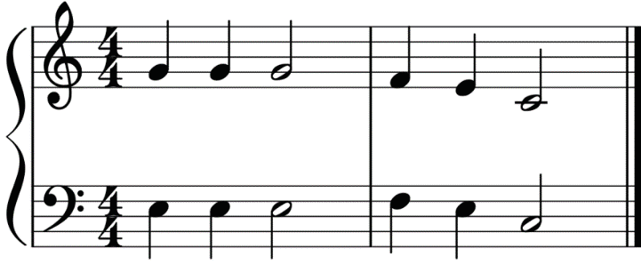
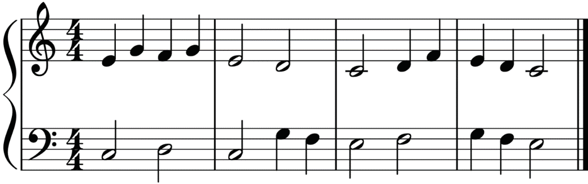

Sight-reading
In music, sight-reading involves reading and performing music from the score without any preparation or practice. In instrumental instruction, therefore, sight-reading refers to the ability to read and play a piece of music that you have never played.
Basic hints to consider during sight-reading
(i)
Identify the key signature, time signature and clef used in a particular musical piece.
(ii)
Highlight all the accidentals used.
(iii)
Identify all musical terms and signs used.
(iv)
Identify the arrangement of different parts of the song including the intervals.
(v)
Read the whole score in your mind first.
(vi)
Tap the rhythm before you attempt playing.
(vii)
Play the musical piece.
Activity 6.31
Play the following musical pieces on the piano.
(i)

(ii)
